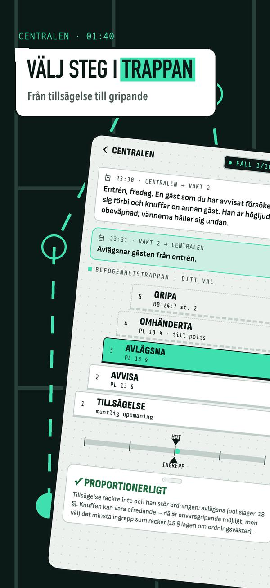
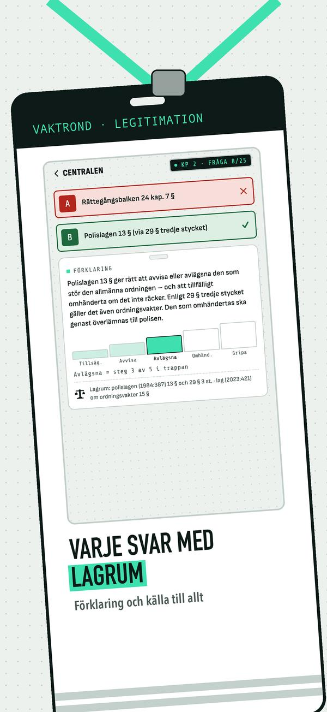
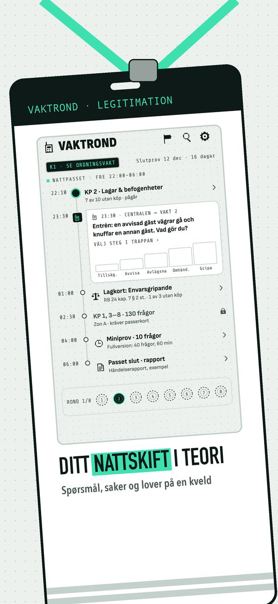
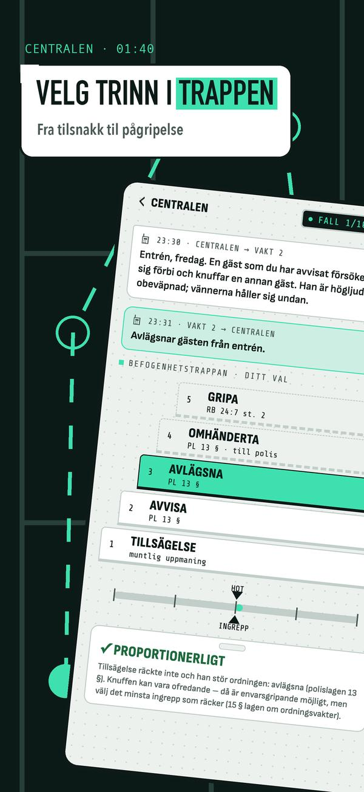
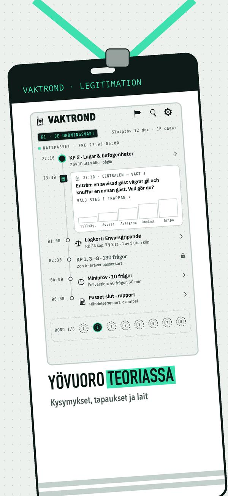
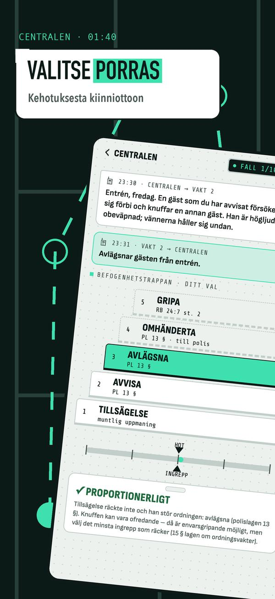
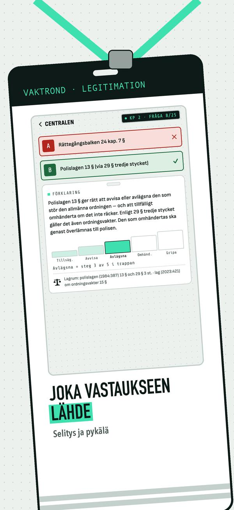
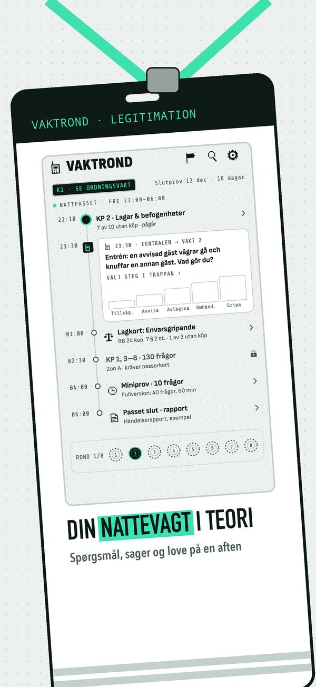
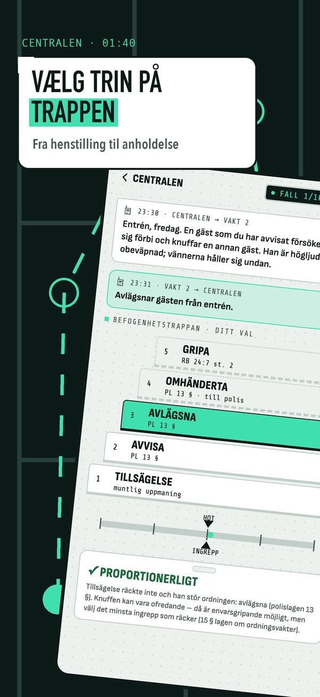
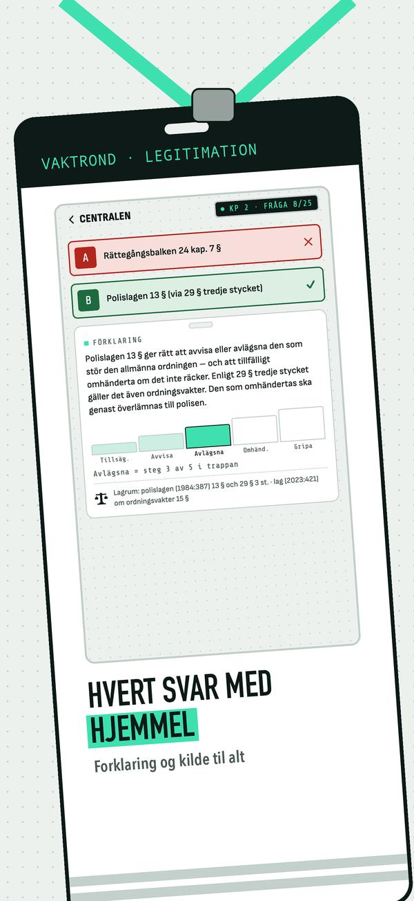

Ett köp – inget abonnemang. Vaktrond hjälper dig med teorin inför utbildningen till ordningsvakt eller väktare – och för vekter i Norge, järjestyksenvalvoja i Finland och vagt i Danmark. Varje kväll ett nattpass: frågor från åtta rondpunkter, fall där du väljer steg i befogenhetstrappan och lagkort med lagrum.


560 egna frågor i 8 rondpunkter – 140 för ditt land
Förklaring och lagrum till varje svar
40 fall: välj rätt steg från tillsägelse till gripande
Övningsprov i eget format med tid
30 lagkort: envarsgripande, nödvärn, avlägsnande med mera
Ett kjøp – ikke abonnement. Vaktrond hjelper deg med teorien i grunnutdanningen for vektere – og for ordningsvakt i Sverige, järjestyksenvalvoja i Finland og vagt i Danmark. Hver kveld et nattskift: spørsmål fra åtte kontrollpunkter, saker der du velger trinn i fullmaktstrappen, og lovkort med hjemmel.


560 egne spørsmål i 8 kontrollpunkter – 140 for ditt land
Forklaring og hjemmel til hvert svar
40 saker: velg riktig trinn fra tilsnakk til pågripelse
Kertaosto – ei tilausta. Vaktrond auttaa järjestyksenvalvojan ja vartijan koulutuksen teoriassa – ja myös ordningsvakt-, vekter- ja vagt-kursseilla Ruotsissa, Norjassa ja Tanskassa. Joka ilta yövuoro: kysymyksiä kahdeksalta kierrospisteeltä, tapauksia toimivaltuuksien portailla ja lakikortteja.



560 omaa kysymystä 8 kierrospisteessä – 140 omalle maalle
Selitys ja lähde jokaiseen vastaukseen
40 tapausta: valitse oikea porras kehotuksesta kiinniottoon
Ét køb – intet abonnement. Vaktrond hjælper dig med teorien til vagtuddannelsen og dørmandskortet – og til ordningsvakt i Sverige, vekter i Norge og järjestyksenvalvoja i Finland. Hver aften en nattevagt: spørgsmål fra otte kontrolpunkter, sager hvor du vælger trin på beføjelsestrappen, og lovkort med lovhjemmel.



560 egne spørgsmål i 8 kontrolpunkter – 140 til dit land
Forklaring og lovhjemmel til hvert svar
40 sager: vælg det rette trin fra henstilling til anholdelse